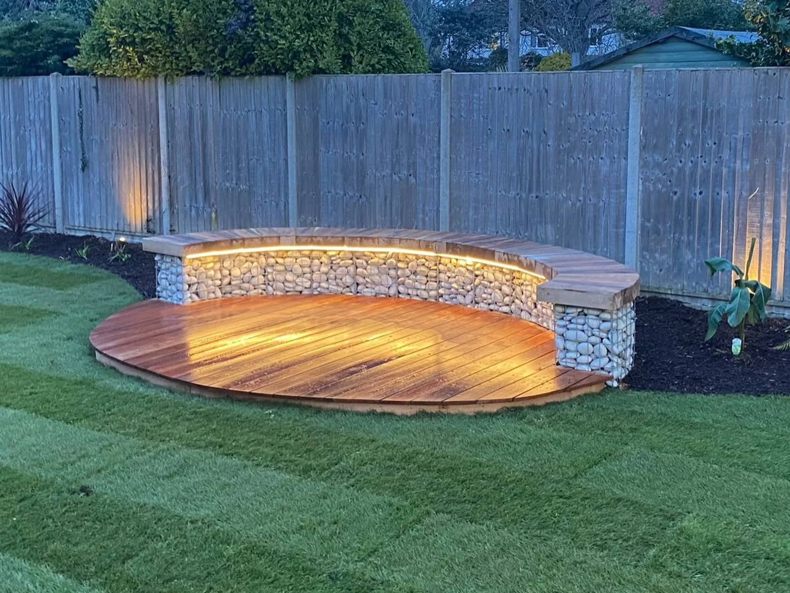
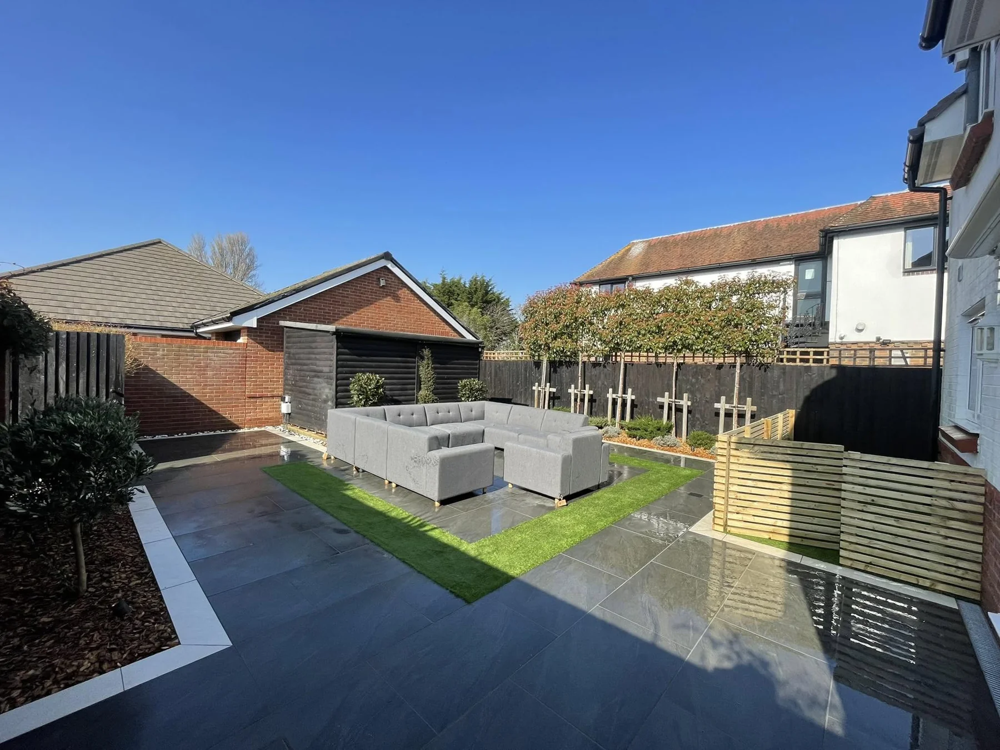
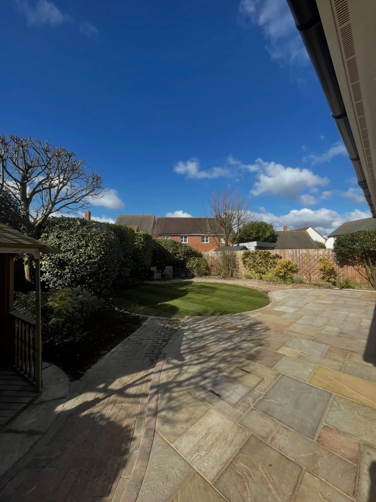
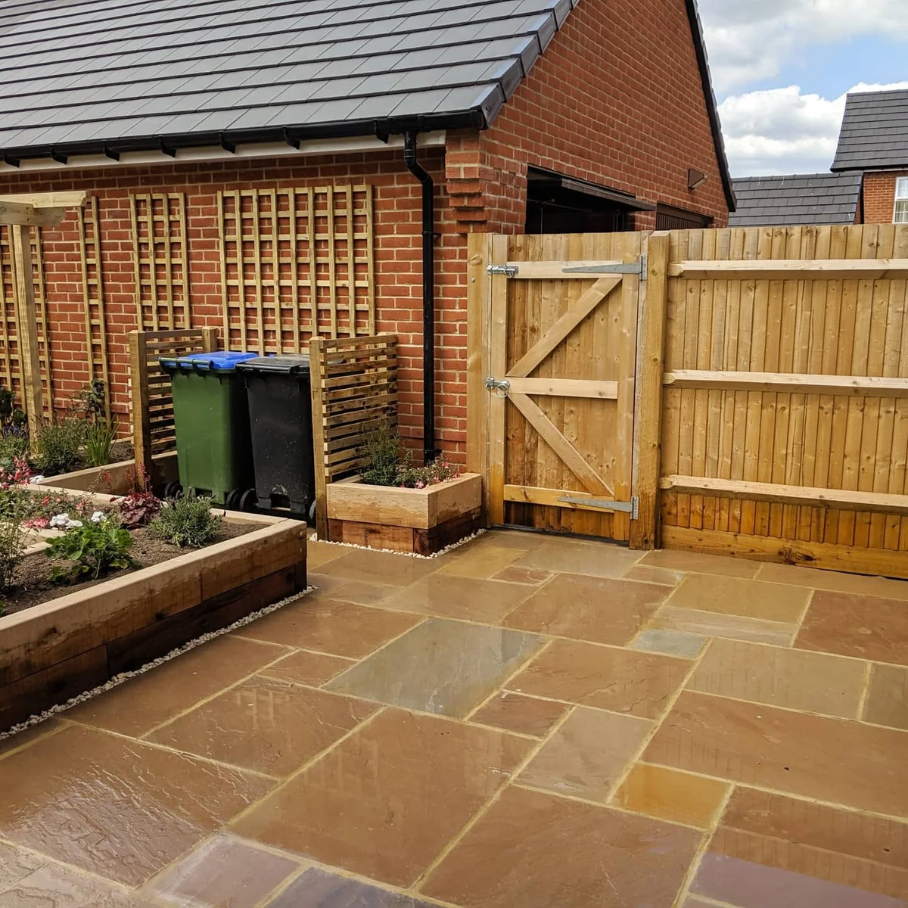
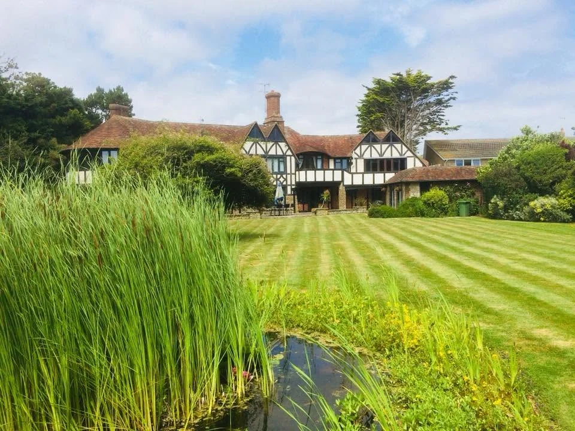
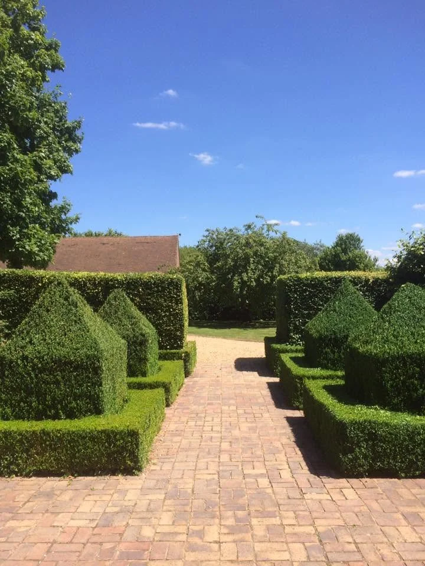
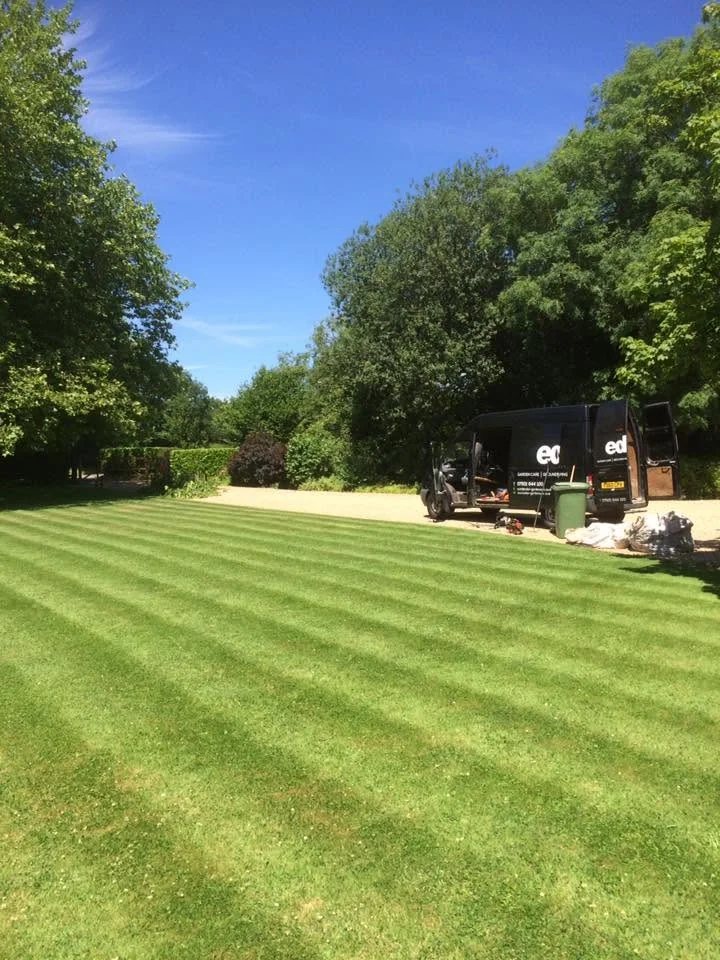
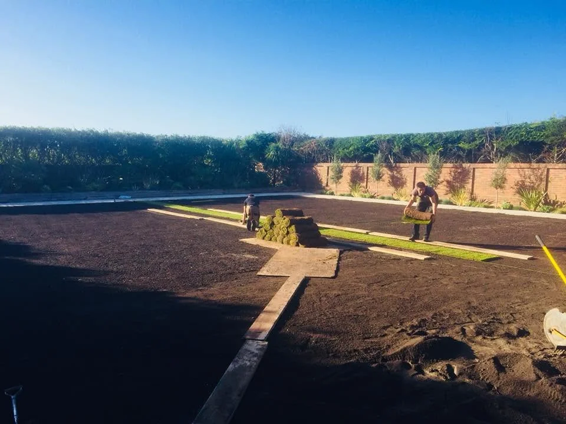
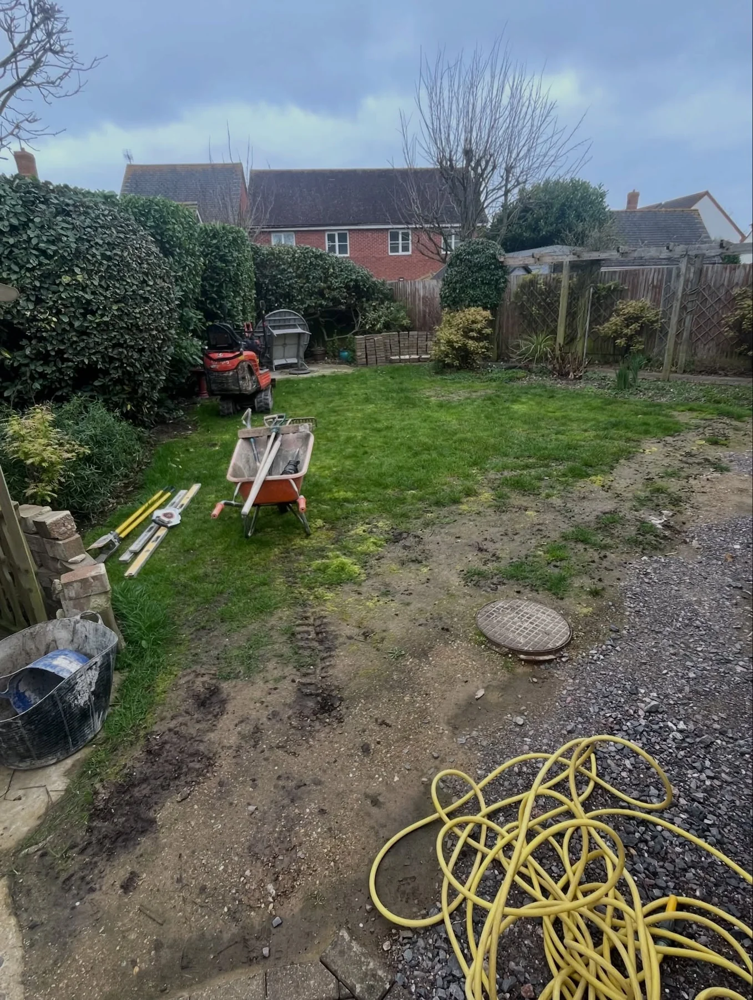
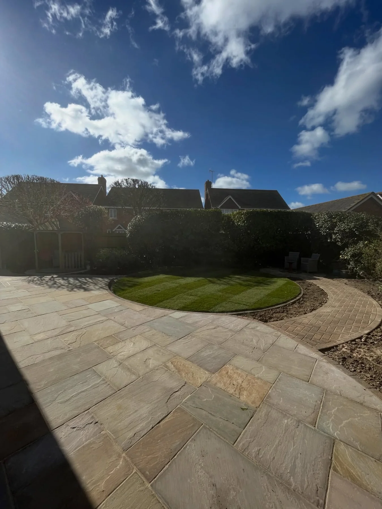

Garden makeoversTurn the whole space into somewhere to enjoy

Patios & pavingSpaces for everyday outdoor living
Fencing & gatesTimber boundaries and garden access
Lawns & groundsFresh lawns and carefully kept spaces
THE EDEN APPROACH
Built around your home. Made to be enjoyed.
From a contemporary courtyard to a wide open lawn, every garden has different possibilities. Eden Landscapes brings paving, lawns, fencing and finishing details together in outdoor spaces across West Sussex.
Discuss your garden →

PAVING & OUTDOOR LIVING
Make space for life outside.
Patios, timber details and lawns give the garden places to gather, pause and enjoy. These are real finished Eden projects.
Talk about your project →
RECENT WORK
Real gardens. Real places to enjoy.
From garden groundwork to completed outdoor spaces, a selection of Eden Landscapes projects.




GARDEN TRANSFORMATION
From groundwork to finished garden.
See a garden during the work and once its lawn and patio were complete.
Plan your garden →

WORTHING · WEST SUSSEX
Spaces that work together.
Eden Landscapes focuses on outdoor spaces where the paving, lawn, planting and boundaries all have a part to play. The supplied projects range from expansive grounds to compact gardens and seating areas.
01
Complete garden makeovers
Bring the different parts of the space together.
02
Patios and hard landscaping
Define places to sit, move through and enjoy.
03
Finishing details
Lawns, fences, gates and garden care help complete the picture.
REQUEST A QUOTE
Tell us about your garden.
Complete the form and WhatsApp will open with your project details ready to send. This is a quote request, not a confirmed booking.
Worthing · West Sussex
EDEN LANDSCAPES
Ready to make more of your garden?
Worthing · West Sussex